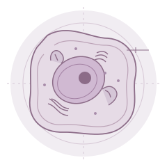
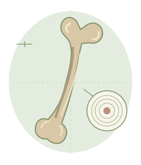
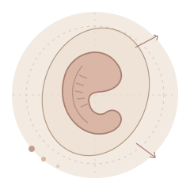

Lyon 1 · Campus Lyon Sud
PASS Lyon Sud
Plateforme interactive de révision
Du vivant à la connaissance. Explorez les structures, reliez les échelles et construisez vos repères, une matière à la fois.
Votre espace de révision
Quatre rubriques. Un même fil conducteur.
01 / UE5VésiculoScope disponible
Biologie cellulaire
Comprendre la cellule et ses échanges. Suivez le trafic vésiculaire avec le VésiculoScope.
Explorer les modules
02 / UE5Ostéoscope disponible
Histologie
Passer de l’organe au tissu, puis à la cellule. Explorez le fémur en 3D.
Explorer les modules
03 / UE5Module en préparation
Embryologie
Se repérer dans le temps et dans l’espace du développement embryonnaire.
Découvrir la rubrique
04 / UE2 & UE5Module en préparation
QCM & annales
Les ressources de Lyon Sud et un futur espace d’entraînement avec corrections détaillées.
Consulter les ressourcesLa plateforme s’enrichira progressivement de nouveaux modules.
Illustrations schématiques · Non à l’échelle